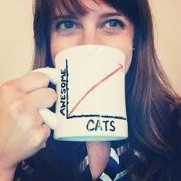
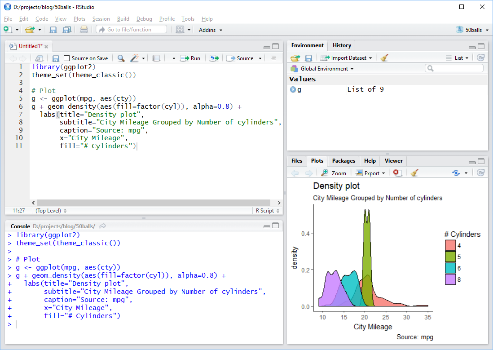
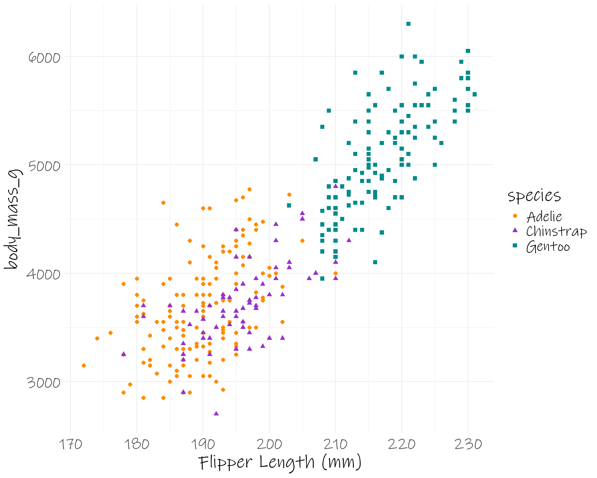
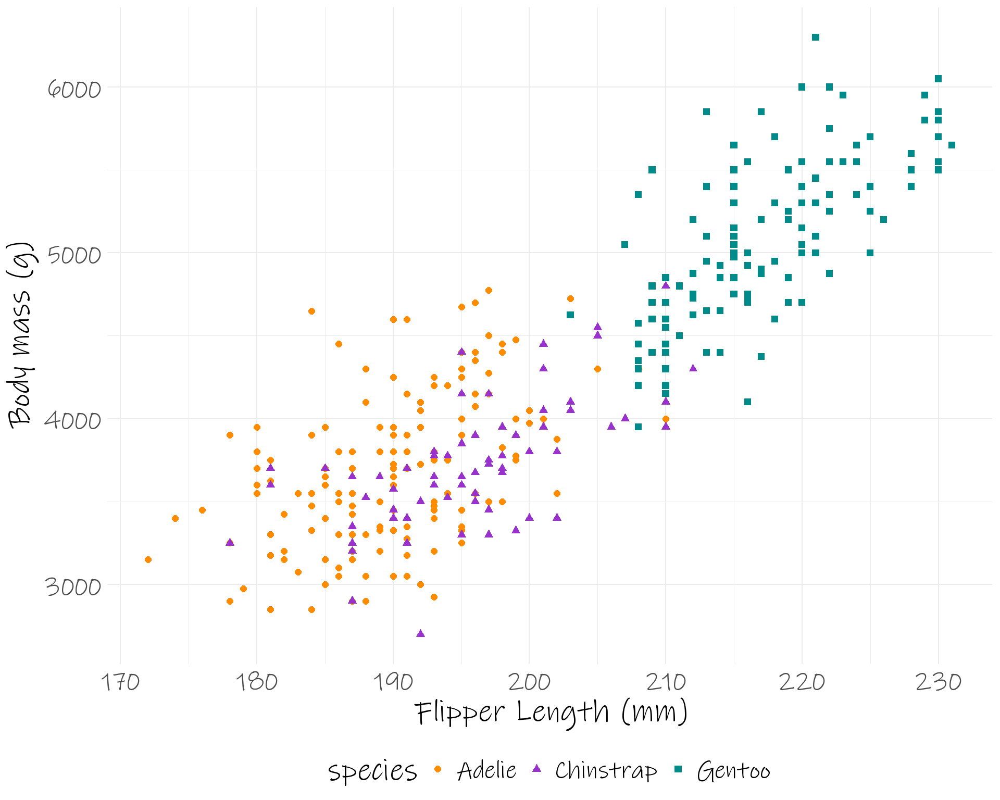
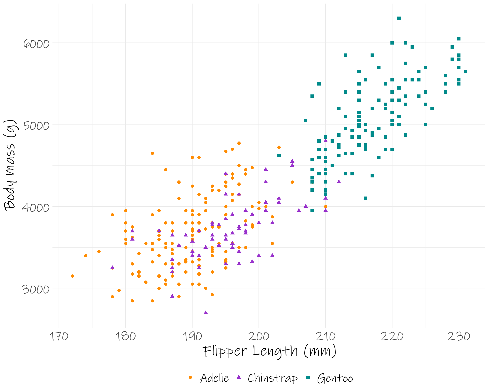
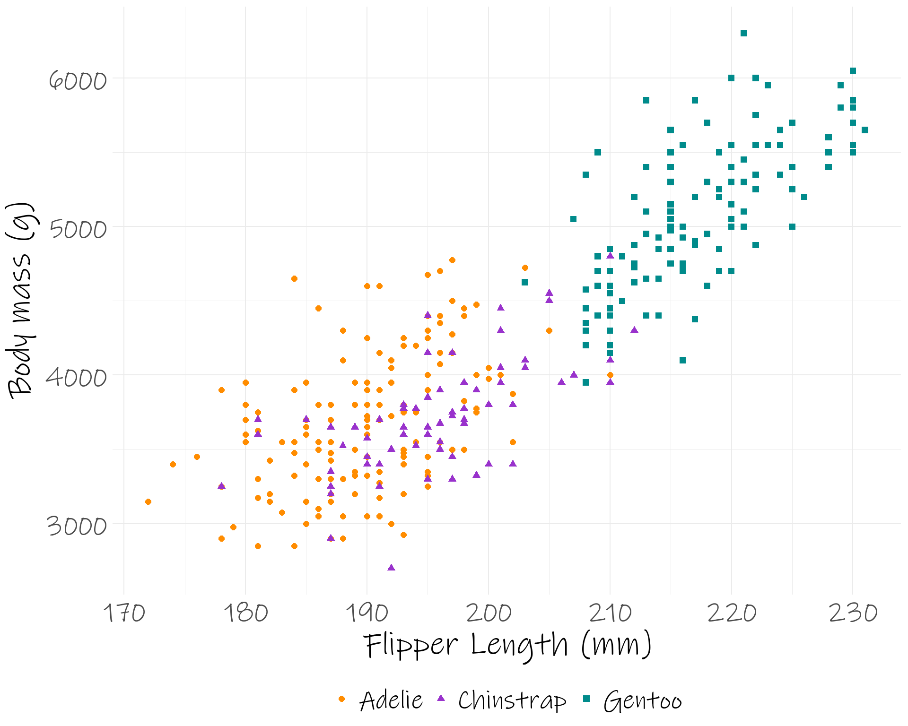
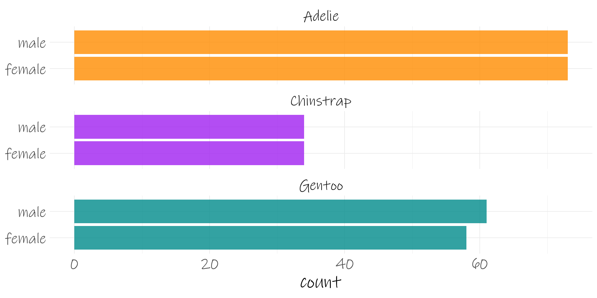
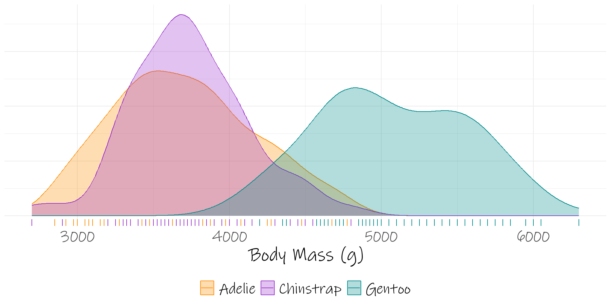

| species | island | bill_length_mm | bill_depth_mm | flipper_length_mm | body_mass_g | sex | year |
|---|---|---|---|---|---|---|---|
| Adelie | Torgersen | 40.2 | 17.0 | 176 | 3450 | female | 2009 |
| Adelie | Torgersen | 34.4 | 18.4 | 184 | 3325 | female | 2007 |
| Adelie | Dream | 37.5 | 18.9 | 179 | 2975 | NA | 2007 |
| Chinstrap | Dream | 55.8 | 19.8 | 207 | 4000 | male | 2009 |
| Gentoo | Biscoe | 52.5 | 15.6 | 221 | 5450 | male | 2009 |
| Adelie | Torgersen | NA | NA | NA | NA | NA | 2007 |
| Chinstrap | Dream | 46.4 | 18.6 | 190 | 3450 | female | 2007 |
| Gentoo | Biscoe | NA | NA | NA | NA | NA | 2009 |
| Chinstrap | Dream | 58.0 | 17.8 | 181 | 3700 | female | 2007 |
| Adelie | Biscoe | 35.3 | 18.9 | 187 | 3800 | female | 2007 |
Data Handling Seminar
👨💻 Eugene Hickey @ Atlantic Technological University 👨💻
- eugene.hickey@tudublin.ie
- @eugene100hickey
- github.com/eugene100hickey
- www.fizzics.ie
Acknowledgments
Ruth Moran, co-pilot for this workshop - Research Training Coordinator.
slides produced using quarto
Target Audience
Early Stage Researchers looking for better ways to present their data.
People currently using tools like googlesheets, MS Excel for analysis.
Seminar Outline
We all have data
How we normally handle it
Why this can be a problem
Some guidelines to do it better
And maybe a whole new approach
Data
experimental results
surveys and questionnaires
student performance metrics
sometimes entered by hand
sometimes automatically produced
multi-dimensional
Where We Store All This
picture some kind of spreadsheet
googlesheets
MS Excel
openoffice calc
familiar format
these are well recommended to kep all our data, but issues can arise if we try to do more than this
data calculations
data analysis
presentation of data in tables and figures
some goofs in spreadsheets……..
- these are some examples of the many mistakes I’ve made in the past
Some Recommendations
raw data is gold dust
- ideally should never be seen by human eyes
keep calculations, analyis, presentation separate from raw data
keep raw data simple
don’t use colour or typeface to represent values
only one piece of information per cell
or use separate paradigm to do all this
Why R?
Working with a mouse isn’t reproducible
- difficult to log exactly what you’ve done
- hard to repeat for a series of analyses
- difficult to be inspired by other people’s work
Good to separate sources of data from the analysis
R uses series of commands that input, manipulate, and display data
Lots of contributors around the globe, diverse fields
- this is the world of open source software
Resources
Books
- recommended text
- Hadley’s book, R for Data Science
- The Epidemiologist R Handbook
- Data Science in Education Using R
- Fundamentals of Data Visualization by Wilke, lots of his actual code is on github at https://github.com/clauswilke/practical_ggplot2
- Data Visualization by Kieran Healy (ISBN = 978-0691181622). ~€25. Also online at https://socviz.co/index.html
- check out the list of online books at bookdown.org
Websites
Karl Broman (https://www.biostat.wisc.edu/~kbroman/), and particularly this presentation
course by Boemhke on github github.com/uc-r/Intro-R
the good people at RStudio have lots of help at https://posit.co/
The R Graph Gallery is pretty good and worth checking out

Blogs and Podcasts

Online Courses
Coursera: Data Science from Johns Hopkins. The course notes are on github
edx.org course from Irizarry

Miscellaneous
RWeekly.org, round up of events in the world of R
#Rstats on twitter Mastodon
#TidyTuesday on twitter
if you get stuck, google is your friend. Often sends you to stackoverflow.com or stackexchange.com
Installing R and RStudio
first R from CRAN
- R is the engine
then RStudio from Posit
- RStudio is the cockpit
alternative is to make an account at Posit Cloud
- give 25 hours per month
R is case sensitive
This is a nice tutorial suite to explain installing R and RStudio:
RStudio Screen

Using RStudio
- toolbar across the top
- I don’t use this very much
- set of quick links below that
- top left (green plus sign) is about the only one I use
- 4 Panes
- top left for files or looking at data
- bottom left for the console
- top right for Environment - tells what variables are stored
- bottom right for plots and help
Using RStudio (continued)
- usual work flow is:
- try commands out at the console (bottom left)
- when that works, store them in a file (top left)
- when sequence of commands works, put them into a document (also top left)
Extending R
- installing R just gives you base R
- beauty of this tool lies with packages 📦
- we’ll look at installing these from three sources:
- CRAN
- Bioconductor
- github
CRAN
- CRAN
- example, on console type
install.packages("palmerpenguins") - this installs the palmerpenguins package (we’ll need this for this week’s quiz)
- over 20k packages on CRAN (see list here)
- sometimes esoteric (engsoccerdata)
- sometimes cutting edge (deep learning)
- each package heavily curated and maintained
- Task Views good place to start looking
- example, on console type
Bioconductor
- Bioconductor
- set of bioinformatics packages (lots of genomics)
- start with
install.packages("BiocManager") - then
BiocManager::install("some_genomics_package")to use - list of packages here
- about 3,000 packages, including genome builds
Github
- github
- packages in development
- start with
install.packages("devtools") - then
devtools::install_github("developer_name/package_name") - almost 80k packages here
- the package githubinstall is useful to search these
Installing Packages
- try
install.packages("scales")- will add functions from someone else’s work so you can use them
- need to do this just once
- to actually make this available, type
library(scales) - do this every time you start R and want to use scales package
- one package we’ll need is tidyverse,
install.packages("tidyverse")- this might take a few minutes because such a large collection of packages
- Using the Console
- Storing Values
- Fundamental Data Types
- The Dataframe - Rows \(\times\) Columns
- Dataframe Columns
- Subsets of Dataframes
- Small Useful Functions
Using the Console
- R is a calculator
- can type, say,
45 + 17and get the answer back - * is multiply, / is divide
- get constants like pi for \(\pi\)
- can run functions from the console like, say,
sqrt(x=49)(or justsqrt(49)) - can get help on these functions by typing, say,
?sqrt - to get list of help in the base package try
base::and then press tab
Storing Values
- results of calculations can be stored
- do this with
my_square_root_result <- sqrt(49) - the
<-reads as gets (can also us equals sign, =, but that’s sloppy) - keyboard short cut for <- is alt and - simultaneously
- full list of RStudio shortcuts in Help on the toolbar (ironically, of course, there is a keyboard shortcut for keyboard shortcuts help)
- list of stored values given in the Environment tab of RStudio
Fundamental Data Types
- numeric (or double) is for numbers with decimals. Default for numbers.
- integer for counting numbers. Type in
x <- 72Lto get integer 72 - logical gives TRUE and FALSE
- character gives text. Try typing
x <- "I am Groot".- Equivalent is
x <- 'I am Groot'
- Equivalent is
- complex is for stuff like 14 + 3i. I’ve never used these. Ironically
sqrt(-1)gives an error rather than i - factor. These deserve fuller explanation and get a slide of their own.
Factors
- super useful when only limited number of possible values for a variable
- examples like female / male or Alabama / Alaska / …. Wyoming
- possible values are called levels
- levels have an order, default is alphabetical but can adjust this
- forcats package in the tidyverse deals with factors
- have big impact on figures
- figures will look different depending on whether a variable is a factor or a character
- legend will be in the order of levels of a factor
- can change between data types using the as. functions
- e.g.
as.character(),as.numeric() - check out all the function in forcats for dealing with factors
- e.g.
- can figure out the data type using the
class()function
Data Frames
- these are the workhorse of R data types
- look like spreadsheets
- we’ll work with them a lot
- organised by rows (across) and columns (down)
- each column must have the same type
- can examine data frames using the
View()function (note, capital “V”) - can find column names using the
names()function - related concepts are tibbles and data.tables
Subsets of Data Frames
- can access individual column elements by specifying the row and column position
- e.g.
mtcars[2, 5]is the 2nd row of the fifth column
- e.g.
- can access an entire row by leaving the column part blank
- e.g.
mtcars[2, ]is the whole 2nd row
- e.g.
- likewise get the entire column by leaving the row slot empty
- e.g.
mtcars[,5]is the entire 5th column
- e.g.
Subsets of Data Frames
- can also access columns using the dollar sign, $
- e.g.
mtcars$cylgives the 2nd column, called cyl
- note
mtcars$cyl[2]gives the second element of this
- e.g.
- can use a number range using : to get a bunch of values
- e.g.
mtcars[1:4, 2:4]takes a chunk of the mtcars data frame
- e.g.
Lists
dataframes have constraints
all columns must be the same type
rows and columns must be the same length
listsare more generalexample,
list_data <- list(c("Jan","Feb","Mar"), matrix(c(3,9,5,1,-2,8), nrow = 2), list("green",12.3))list_data[[1]]gives the three months, etc- note the double square bracket,
[[ ]]
- note the double square bracket,
Some Useful Functions
c()let’s you create a vector of quantities. Coerced to same typeis.na()to check if a missing value,sum(is.na())gives total of thesedim()gives number of rows / columns in data frame, alsolength()class()for nature of variablesummary(),str(),glimpse()show data frame parameters. Alsoskim()from the skimr package- I use
%in%quite a bit, checks if value is among a bunch of values"August" %in% month.name"£" %in% letters
Some Useful Functions
Sys.date(),Sys.time()ls()gives list of variablesfile.list()gives list of filessessionInfo()tells you what packages are loadedcitation()tells you about a packagemean()calculates mean of a vector,sd()the standard deviationcomplete.cases()returnsTRUEif there are no missing values in a row
And Some Weird Characters
- get to use a lot of the keyboard in R
- we’ve seen
$to extract a column of a data frame ()are arguments to functions[]are gateways to data frame elements%>%is called the pipe and is really cool. Ctrl + Shift + M shortcut- some logical operators:
!is NOT,|(or||) is OR,&(or&&) is AND
- we’ve seen
Graphics
often the last mile of data analysis / presentation
really important - visible
series of figures to present a narrative
R does this really well
- the grammar of graphics
The Penguins
 ( from @allison_horst)
( from @allison_horst)
my penguins
# A tibble: 344 × 8
species island bill_length_mm bill_depth_mm flipper_length_mm body_mass_g
<fct> <fct> <dbl> <dbl> <int> <int>
1 Adelie Torgersen 39.1 18.7 181 3750
2 Adelie Torgersen 39.5 17.4 186 3800
3 Adelie Torgersen 40.3 18 195 3250
4 Adelie Torgersen NA NA NA NA
5 Adelie Torgersen 36.7 19.3 193 3450
6 Adelie Torgersen 39.3 20.6 190 3650
7 Adelie Torgersen 38.9 17.8 181 3625
8 Adelie Torgersen 39.2 19.6 195 4675
9 Adelie Torgersen 34.1 18.1 193 3475
10 Adelie Torgersen 42 20.2 190 4250
# ℹ 334 more rows
# ℹ 2 more variables: sex <fct>, year <int>my penguins
my penguins
my penguins
my penguins
my penguins

my penguins
# Scatterplot example 1: penguin flipper length versus body mass
penguins |>
ggplot() +
aes(x = flipper_length_mm, y = body_mass_g) +
geom_point(aes(color = species,
shape = species),
size = 2) +
scale_colour_manual(values = c("darkorange","darkorchid","cyan4")) +
xlab("Flipper Length (mm)") +
ylab("Body mass (g)")my penguins
# Scatterplot example 1: penguin flipper length versus body mass
penguins |>
ggplot() +
aes(x = flipper_length_mm, y = body_mass_g) +
geom_point(aes(color = species,
shape = species),
size = 2) +
scale_colour_manual(values = c("darkorange","darkorchid","cyan4")) +
xlab("Flipper Length (mm)") +
ylab("Body mass (g)") +
theme(legend.position="bottom")
my penguins
# Scatterplot example 1: penguin flipper length versus body mass
penguins |>
ggplot() +
aes(x = flipper_length_mm, y = body_mass_g) +
geom_point(aes(color = species,
shape = species),
size = 2) +
scale_colour_manual(values = c("darkorange","darkorchid","cyan4")) +
xlab("Flipper Length (mm)") +
ylab("Body mass (g)") +
theme(legend.position="bottom") +
theme(legend.title = element_blank())
my penguins
# Scatterplot example 1: penguin flipper length versus body mass
penguins |>
ggplot() +
aes(x = flipper_length_mm, y = body_mass_g) +
geom_point(aes(color = species,
shape = species),
size = 2) +
scale_colour_manual(values = c("darkorange","darkorchid","cyan4")) +
xlab("Flipper Length (mm)") +
ylab("Body mass (g)") +
theme(legend.position="bottom") +
theme(legend.title = element_blank()) +
theme(text = element_text(size = 52))
my penguins
# Scatterplot example 1: penguin flipper length versus body mass
penguins |>
ggplot() +
aes(x = flipper_length_mm, y = body_mass_g) +
geom_point(aes(color = species,
shape = species),
size = 2) +
scale_colour_manual(values = c("darkorange","darkorchid","cyan4")) +
xlab("Flipper Length (mm)") +
ylab("Body mass (g)") +
theme(legend.position="bottom") +
theme(legend.title = element_blank()) +
theme(text = element_text(size = 52))


Summary
spreadsheets are excellent for storing / entering our data
but use them cautiously
lots of other options for analysis and presentation
graphics can be things of beauty